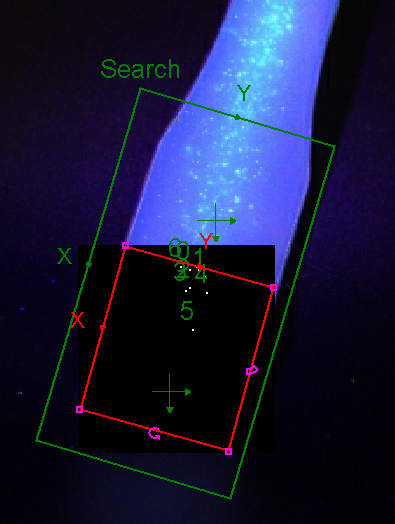

Background
This is a R&D project on developing annticounterfeit plastic that have inclonable ID when exposed in UV light.
Currently, it is very easy to produce fake plastics products if we can get the design of mold. Therefore, an idea of using florescent substancs to anticounterfeit plastics has emerged.
This new technology can safeguard the interest of plastic manufacturer, given their products are being producted even some confidential designs have leaked out of the market.
Plastic manufacturing
Upon manufacturing, the plastic will be mixed with granules of florescent substances. During the process of injection molding, the florescent substances will randomly mixed and hence producded a pattern for each different products.
At this stage of R&D project, we are still determining the florescent substances in order to commercialize this R&D project and implement to different clients.
Vision

After having the substances spread all around the plastic, the ID could be seen with UV light exposed to the surface. By the aid of computer vision, we can train the model of diffferent ID for the manufactured products.
As shown in the first photo, using computer vision can clearly plot a pattern of dots on the plastic. Then when the trained ID and the ID of the plastic matches with each other, we can then confirm the products is real and not fake products.
Further discussion
The project is still on-going. I will update the content once I have new information for this project.